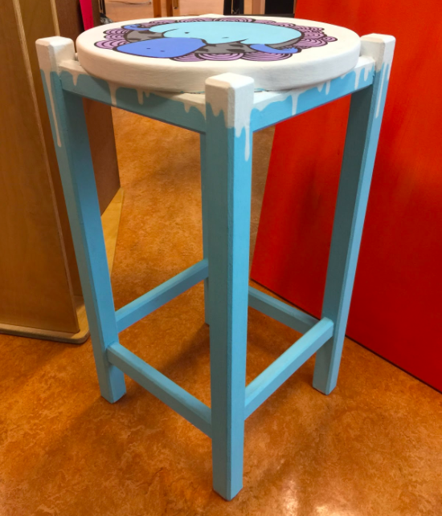

Since the platypus is the focal point, I chose to surround it with the bubble frame. It’s color is also different from the rest of the chair’s top, and is brighter than the other colors (except the white background). Unity was created through the black borders and lines, and the dark grey fish. The rest of the chair was blue - the same shade as the platypus - with white drips - same as the background. The idea was breaking away from standards. The blue platypus is swimming away from the grey lake with grey fish. The bubbles also showed uniformity.
I measured the stencil wrong, so it’s not perfectly centered on the chair. The platypus is also tilted, so its right side is more covered by the frame than the left. I also could have used the paint pen for the circular frame (I first did it with a paintbrush, which gave me uneven lines, then did it again with a paint pen).
The chair was stencilled and painted. At the top is a blue platypus swimming out of a lake with a school of identical fish. Through colors I show the platypus breaking away from the standard. Platypodes are very distinct animals and went against the common idea of a mammal. That’s why I used them to symbolize being different.
I was mostly inspired by Shepard Fairey, who uses stencils and images with simplified shadows, simple composition, few contrasting colors. and patterns framing the main focus. I also used Ludo’s paint dripping, Their work didn’t overwhelm the audience while effectively conveying their messages.
